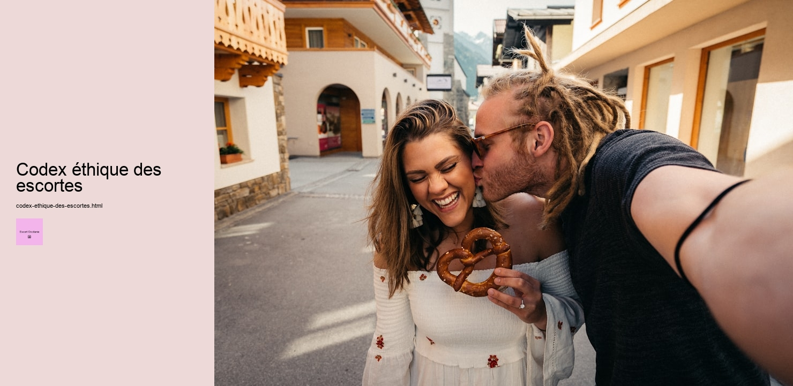

Le Codex éthique des escortes est un document imaginaire qui pourrait servir de guide pour établir des normes éthiques dans le domaine controversé des services descorte. Lindustrie des escortes, bien quentourée de stigmates et de préjugés, représente une réalité économique et sociale dans de nombreuses sociétés. Un tel codex pourrait non seulement offrir des directives aux professionnels de ce secteur, mais aussi contribuer à une meilleure compréhension et acceptation de leur rôle dans la société.
Premièrement, un Codex éthique des escortes devrait mettre laccent sur le consentement et le respect mutuel. Toute interaction entre une escorte et un client doit être fondée sur un accord mutuel et explicite, où les frontières et les attentes sont clairement définies et respectées. Le consentement nest pas un simple formulaire à remplir, mais un processus continu qui nécessite une communication ouverte et honnête. Cela garantit non seulement la sécurité des deux parties, mais aussi une expérience plus enrichissante et respectueuse.
Deuxièmement, la confidentialité est un pilier essentiel de ce code éthique. Les escortes, tout comme leurs clients, ont droit à la vie privée. Le partage dinformations personnelles ou la divulgation de détails sur les rencontres sans le consentement explicite des deux parties devrait être strictement proscrit. Cette règle protège non seulement lidentité et la réputation des individus concernés, mais renforce également la confiance entre les parties prenantes.
En outre, le codex devrait promouvoir lautonomisation et le bien-être des escortes. Ces professionnels devraient avoir accès à un soutien juridique, médical et psychologique pour les aider à naviguer dans les défis uniques de leur profession. Léducation et la formation continue pourraient également être encouragées pour garantir que les escortes soient bien informées de leurs droits et des ressources disponibles pour elles.
Il est également crucial que le Codex éthique des escortes sengage à combattre toute forme dexploitation ou de coercition. Toute activité qui force une personne à travailler contre sa volonté dans le secteur de lescorte doit être vigoureusement condamnée et combattue. Lindustrie doit se démarquer de telles pratiques et promouvoir un environnement où le choix et la liberté individuelle priment.
Enfin, un dialogue ouvert avec la société est essentiel pour déstigmatiser le travail des escortes. Le codex pourrait encourager des discussions honnêtes sur le rôle de ces professionnels, soulignant quils fournissent un service légitime qui mérite respect et reconnaissance. Le changement des perceptions sociales est un processus lent, mais un cadre éthique bien défini peut être un pas important vers une meilleure acceptation.
En conclusion, bien que le Codex éthique des escortes soit une proposition théorique, il soulève des questions cruciales sur la manière dont les normes éthiques peuvent être intégrées dans une industrie souvent mal comprise. En promouvant le respect, la sécurité, et lautonomisation, un tel codex pourrait contribuer à une société où tous les travailleurs, indépendamment de leur domaine, sont traités avec dignité et respect.
Services d'escorte en Occitanie